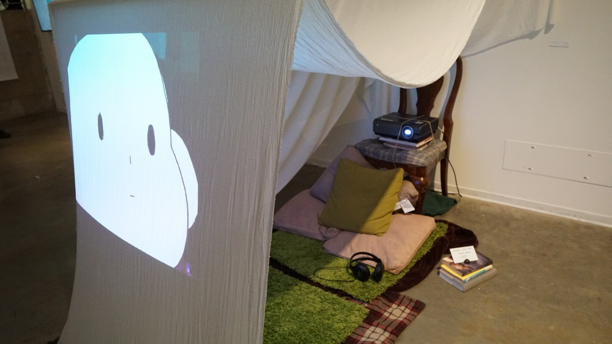
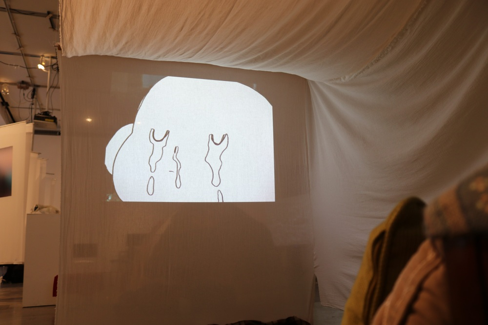
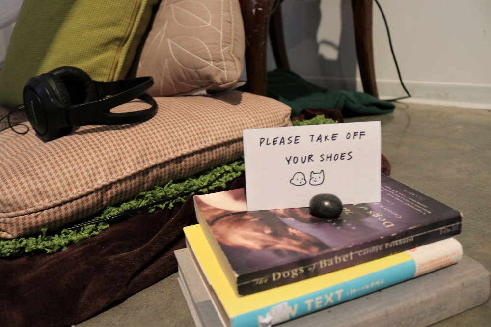

I AM LOST WITHOUT YOU
is an animation exhibited at Authentication Error [SOLVED] at Broad Art Center, about a character who loses a friend and struggles with themself and with reality.
the installation of the animation is to convey the initial feeling of security and comfort, as a child in a blanket fort. this installation method then juxtaposes the remainder of the animation, as reality distorts and that feeling of comfort is stripped away even as you are within its physical manifestation.

the animation was drawn and animated on Photoshop. seeing as Photoshop is not primarily an animation tool, the process was a little more complicated and tedious than it could have been. i made the choice to continue animating this way because i was going for a rougher handmade animating style to convey a childish feeling in the animation.
i also initially wanted the backgrounds of every frame to be a photo i took using my 35mm film camera, but since going through with that would have been more time and money consuming i decided to use digital photos instead. i kept the resolution that it would have been with the 35mm photographs to keep the cozy, old-timey feel.
all the backgrounds were photos i took, some with a digital camera, some with my phone, some were old film photos that i manipulated and mashed up together in photoshop.

the story is one of someone losing a friend, and eventually coming to a reconciliation with the fact.
i wanted viewers to feel isolated during the experience and come away feeling that the sense of comfort from the blanket fort they are in is fabricated in a way, and is only there to cloud over the feeling of loneliness that the animation gives.
